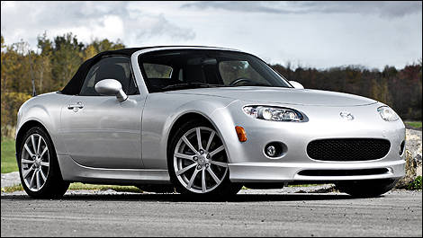

O Dodge Demon foi um conceito feito pela DaimlerChrysler, projetado para se encaixar no Viper como um carro esporte mais acessível da Dodge. The Demon foi mostrado pela primeira vez no Salão do Automóvel de Genebra de 2007, e foi considerado para produção. Foi concebido para competir com carros como o Pontiac Solstice, Saturn Sky e Mazda Miata.
Dodge Challenger SRT Demon é um dos carros mais rápidos do mundo Modelo tem 851 cv de potência e acelera de 0 a 96 km/h em apenas 2,3 segundos A Dodge já havia se destacado entre os carros de alto desempenho em 2014, com as versões SRT Hellcat do Charger e do Challenger, de717 cv, dois supercarros a preços acessíveis. Estes foram os muscle cars mais potentes da história – até agora! Hoje, no Salão do Automóvel de Nova Iorque, a Dodge atinge um novo patamar nos veículos de alto desempenho com o Dodge Challenger SRT Demon 2018.
Pontiac Solstice(2007)
Saturn Sky (2008)
Mazda Miata(2008)
Especificações técnicas

Camaro ZL1 Exorcist é a arma ungida contra o Challenger Demon Versão super nervosa com 1.000 cv surge pelas mãos da preparadora Hennessey. A Hennessey diz que a aceleração de 0 a 96 km/h é feita em menos de 3 segundos (contra 3,5 s do modelo original), mas não informa números sobre a velocidade máxima. Quem estiver interessado em adquirir o bólido pode comprar diretamente na preparadora ou fazer encomendas nas concessionárias GM. Só recomendamos não demorar, já que apenas 100 exemplares serão feitos por ano. O custo base para conversão do ZL1 em The Exorcist (incluindo todas as modificações mecânicas e visuais) é de US$ 55 mil, com garantia limitada de 2 anos ou 24 mil milhas (cerca de 38.600 km). Será que ele consegue mandar o Demon para os quintos dos infernos?.
Sob o capô, um motor LT4 V8 de 6,2 litros que naturalmente garante 650 cv de potência e 89 kgfm de torque, saltou para 1.013 cv e 137 kgfm graças ao novo superalimentador maior, sistema de combustível atualizado com uma nova bomba e injetores, maior fluxo de entrada de ar, novos eixos de comando, um trocador de calor maior, coletores de aço inoxidável e conversores catalíticos de alto fluxo.
Entre alguns destaques visuais, a pintura de do The Exorcist Final Edition possui um gráfico especial que comemora 57 anos desde que o icônico Chevrolet Camaro entrou em produção. Além disso, a outra prova de exclusividade fica para a placa no compartimento do motor, assinada pelo técnico que construiu o veículo. Vale lembrar que o nome “Exorcista”, é uma provocação a um dos seus principais rivais, o Dodge Challenger SRT Demon.